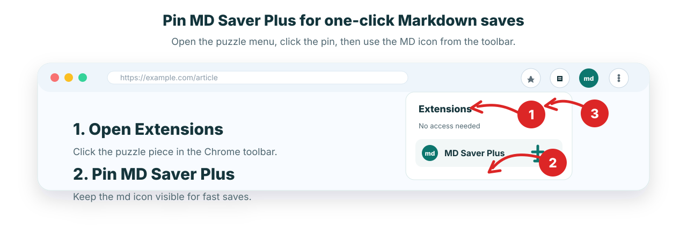

Pin it
Open the puzzle menu and pin MD Saver Plus to the toolbar.
MD Saver Plus
Pin the extension, select content or save a cleaned webpage, and get a local .md file.

Open the puzzle menu and pin MD Saver Plus to the toolbar.
Save selected text or cleaned webpage content from the popup.
Your Markdown file downloads locally. No account or cloud sync is used.